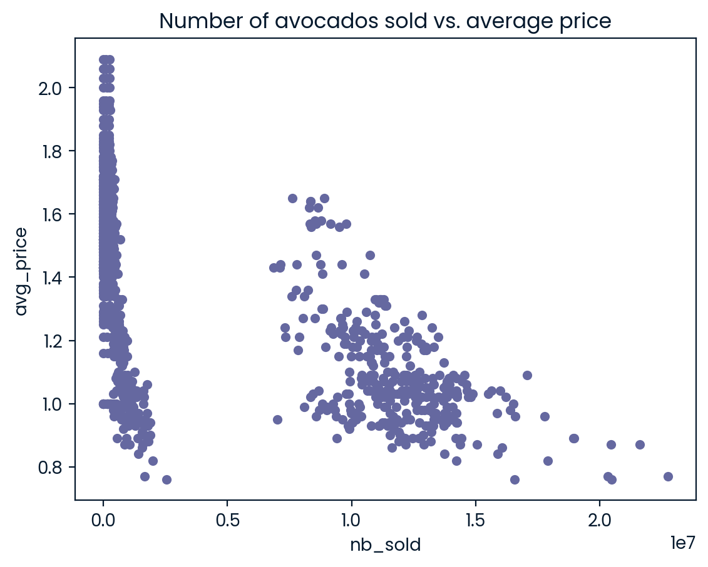

Data Manipulation with pandas
# Import the course packages
import pandas as pd
import numpy as np
import matplotlib.pyplot as plt
# Import the four datasets
avocado = pd.read_csv("datasets/avocado.csv")
homelessness = pd.read_csv("datasets/homelessness.csv")
temperatures = pd.read_csv("datasets/temperatures.csv")
walmart = pd.read_csv("datasets/walmart.csv")Explore Datasets
Use the DataFrames imported in the first cell to explore the data and practice your skills! - Print the highest weekly sales for each department in the walmart DataFrame. Limit your results to the top five departments, in descending order. If you’re stuck, try reviewing this video. - What was the total nb_sold of organic avocados in 2017 in the avocado DataFrame? If you’re stuck, try reviewing this video. - Create a bar plot of the total number of homeless people by region in the homelessness DataFrame. Order the bars in descending order. Bonus: create a horizontal bar chart. If you’re stuck, try reviewing this video. - Create a line plot with two lines representing the temperatures in Toronto and Rome. Make sure to properly label your plot. Bonus: add a legend for the two lines. If you’re stuck, try reviewing this video.
Chapter 1
Transforming DataFrames
Let’s master the pandas basics. Learn how to inspect DataFrames and perform fundamental manipulations, including sorting rows, subsetting, and adding new columns.
Inspecting a DataFrame
When you get a new DataFrame to work with, the first thing you need to do is explore it and see what it contains. There are several useful methods and attributes for this.
.head() returns the first few rows (the “head” of the DataFrame).
.info() shows information on each of the columns, such as the data type and number of missing values.
.shape returns the number of rows and columns of the DataFrame.
.describe() calculates a few summary statistics for each column.homelessness is a DataFrame containing estimates of homelessness in each U.S. state in 2018. The individual column is the number of homeless individuals not part of a family with children. The family_members column is the number of homeless individuals part of a family with children. The state_pop column is the state’s total population.
Instructions
- Print the head of the homelessness DataFrame.
- Print information about the column types and missing values in homelessness.
- Print the number of rows and columns in homelessness.
- Print some summary statistics that describe the homelessness DataFrame.
# Print the head of the homelessness data
print(homelessness.head())
# Print information about homelessness
print(homelessness.info())
# Print the shape of homelessness
print(homelessness.shape)
# Print a description of homelessness
print(homelessness.describe()) region state individuals family_members state_pop
0 East South Central Alabama 2570.0 864.0 4887681
1 Pacific Alaska 1434.0 582.0 735139
2 Mountain Arizona 7259.0 2606.0 7158024
3 West South Central Arkansas 2280.0 432.0 3009733
4 Pacific California 109008.0 20964.0 39461588
<class 'pandas.core.frame.DataFrame'>
RangeIndex: 51 entries, 0 to 50
Data columns (total 5 columns):
# Column Non-Null Count Dtype
--- ------ -------------- -----
0 region 51 non-null object
1 state 51 non-null object
2 individuals 51 non-null float64
3 family_members 51 non-null float64
4 state_pop 51 non-null int64
dtypes: float64(2), int64(1), object(2)
memory usage: 2.1+ KB
None
(51, 5)
individuals family_members state_pop
count 51.000000 51.000000 5.100000e+01
mean 7225.784314 3504.882353 6.405637e+06
std 15991.025083 7805.411811 7.327258e+06
min 434.000000 75.000000 5.776010e+05
25% 1446.500000 592.000000 1.777414e+06
50% 3082.000000 1482.000000 4.461153e+06
75% 6781.500000 3196.000000 7.340946e+06
max 109008.000000 52070.000000 3.946159e+07Parts of a DataFrame
To better understand DataFrame objects, it’s useful to know that they consist of three components, stored as attributes:
.values: A two-dimensional NumPy array of values.
.columns: An index of columns: the column names.
.index: An index for the rows: either row numbers or row names.You can usually think of indexes as a list of strings or numbers, though the pandas Index data type allows for more sophisticated options. (These will be covered later in the course.)
homelessness is available. ### Instructions
Import pandas using the alias pd.
Print a 2D NumPy array of the values in homelessness.
Print the column names of homelessness.
Print the index of homelessness.# Import pandas using the alias pd
import pandas as pd
# Print the values of homelessness
print(homelessness.values)
# Print the column index of homelessness
print(homelessness.columns)
# Print the row index of homelessness
print(homelessness.index)[['East South Central' 'Alabama' 2570.0 864.0 4887681]
['Pacific' 'Alaska' 1434.0 582.0 735139]
['Mountain' 'Arizona' 7259.0 2606.0 7158024]
['West South Central' 'Arkansas' 2280.0 432.0 3009733]
['Pacific' 'California' 109008.0 20964.0 39461588]
['Mountain' 'Colorado' 7607.0 3250.0 5691287]
['New England' 'Connecticut' 2280.0 1696.0 3571520]
['South Atlantic' 'Delaware' 708.0 374.0 965479]
['South Atlantic' 'District of Columbia' 3770.0 3134.0 701547]
['South Atlantic' 'Florida' 21443.0 9587.0 21244317]
['South Atlantic' 'Georgia' 6943.0 2556.0 10511131]
['Pacific' 'Hawaii' 4131.0 2399.0 1420593]
['Mountain' 'Idaho' 1297.0 715.0 1750536]
['East North Central' 'Illinois' 6752.0 3891.0 12723071]
['East North Central' 'Indiana' 3776.0 1482.0 6695497]
['West North Central' 'Iowa' 1711.0 1038.0 3148618]
['West North Central' 'Kansas' 1443.0 773.0 2911359]
['East South Central' 'Kentucky' 2735.0 953.0 4461153]
['West South Central' 'Louisiana' 2540.0 519.0 4659690]
['New England' 'Maine' 1450.0 1066.0 1339057]
['South Atlantic' 'Maryland' 4914.0 2230.0 6035802]
['New England' 'Massachusetts' 6811.0 13257.0 6882635]
['East North Central' 'Michigan' 5209.0 3142.0 9984072]
['West North Central' 'Minnesota' 3993.0 3250.0 5606249]
['East South Central' 'Mississippi' 1024.0 328.0 2981020]
['West North Central' 'Missouri' 3776.0 2107.0 6121623]
['Mountain' 'Montana' 983.0 422.0 1060665]
['West North Central' 'Nebraska' 1745.0 676.0 1925614]
['Mountain' 'Nevada' 7058.0 486.0 3027341]
['New England' 'New Hampshire' 835.0 615.0 1353465]
['Mid-Atlantic' 'New Jersey' 6048.0 3350.0 8886025]
['Mountain' 'New Mexico' 1949.0 602.0 2092741]
['Mid-Atlantic' 'New York' 39827.0 52070.0 19530351]
['South Atlantic' 'North Carolina' 6451.0 2817.0 10381615]
['West North Central' 'North Dakota' 467.0 75.0 758080]
['East North Central' 'Ohio' 6929.0 3320.0 11676341]
['West South Central' 'Oklahoma' 2823.0 1048.0 3940235]
['Pacific' 'Oregon' 11139.0 3337.0 4181886]
['Mid-Atlantic' 'Pennsylvania' 8163.0 5349.0 12800922]
['New England' 'Rhode Island' 747.0 354.0 1058287]
['South Atlantic' 'South Carolina' 3082.0 851.0 5084156]
['West North Central' 'South Dakota' 836.0 323.0 878698]
['East South Central' 'Tennessee' 6139.0 1744.0 6771631]
['West South Central' 'Texas' 19199.0 6111.0 28628666]
['Mountain' 'Utah' 1904.0 972.0 3153550]
['New England' 'Vermont' 780.0 511.0 624358]
['South Atlantic' 'Virginia' 3928.0 2047.0 8501286]
['Pacific' 'Washington' 16424.0 5880.0 7523869]
['South Atlantic' 'West Virginia' 1021.0 222.0 1804291]
['East North Central' 'Wisconsin' 2740.0 2167.0 5807406]
['Mountain' 'Wyoming' 434.0 205.0 577601]]
Index(['region', 'state', 'individuals', 'family_members', 'state_pop'], dtype='object')
RangeIndex(start=0, stop=51, step=1)Sorting rows
Finding interesting bits of data in a DataFrame is often easier if you change the order of the rows. You can sort the rows by passing a column name to .sort_values().
In cases where rows have the same value (this is common if you sort on a categorical variable), you may wish to break the ties by sorting on another column. You can sort on multiple columns in this way by passing a list of column names.
| Sort on … | Syntax |
|---|---|
| one column | df.sort_values(“breed”) |
multiple columns | df.sort_values([“breed”, “weight_kg”])|
By combining .sort_values() with .head(), you can answer questions in the form, “What are the top cases where…?”.
homelessness is available and pandas is loaded as pd. ### Instructions - Sort homelessness by the number of homeless individuals, from smallest to largest, and save this as homelessness_ind. Print the head of the sorted DataFrame.
Sort homelessness by the number of homeless family_members in descending order, and save this as homelessness_fam. Print the head of the sorted DataFrame.
Sort homelessness first by region (ascending), and then by number of family members (descending). Save this as homelessness_reg_fam.
# Sort homelessness by individuals
homelessness_ind = homelessness.sort_values("individuals")
# Print the top few rows
print(homelessness_ind.head()) region state individuals family_members state_pop
50 Mountain Wyoming 434.0 205.0 577601
34 West North Central North Dakota 467.0 75.0 758080
7 South Atlantic Delaware 708.0 374.0 965479
39 New England Rhode Island 747.0 354.0 1058287
45 New England Vermont 780.0 511.0 624358# Sort homelessness by descending family members
homelessness_fam = homelessness.sort_values("family_members",ascending=False)
# Print the top few rows
print(homelessness_fam.head()) region state individuals family_members state_pop
32 Mid-Atlantic New York 39827.0 52070.0 19530351
4 Pacific California 109008.0 20964.0 39461588
21 New England Massachusetts 6811.0 13257.0 6882635
9 South Atlantic Florida 21443.0 9587.0 21244317
43 West South Central Texas 19199.0 6111.0 28628666# Sort homelessness by region, then descending family members
homelessness_reg_fam = homelessness.sort_values(["region","family_members"], ascending=(True,False))
# Print the top few rows
print(homelessness_reg_fam.head()) region state individuals family_members state_pop
13 East North Central Illinois 6752.0 3891.0 12723071
35 East North Central Ohio 6929.0 3320.0 11676341
22 East North Central Michigan 5209.0 3142.0 9984072
49 East North Central Wisconsin 2740.0 2167.0 5807406
14 East North Central Indiana 3776.0 1482.0 6695497Subsetting columns
When working with data, you may not need all of the variables in your dataset. Square brackets ([]) can be used to select only the columns that matter to you in an order that makes sense to you. To select only “col_a” of the DataFrame df, use
df[“col_a”]
To select “col_a” and “col_b” of df, use
df[[“col_a”, “col_b”]]
homelessness is available and pandas is loaded as pd.
Instructions
Create a DataFrame called individuals that contains only the individuals column of homelessness. Print the head of the result.
Create a DataFrame called state_fam that contains only the state and family_members columns of homelessness, in that order. Print the head of the result.
Create a DataFrame called ind_state that contains the individuals and state columns of homelessness, in that order. Print the head of the result.
# Select the individuals column
individuals = homelessness["individuals"]
# Print the head of the result
print(individuals.head())0 2570.0
1 1434.0
2 7259.0
3 2280.0
4 109008.0
Name: individuals, dtype: float64# Select the state and family_members columns
state_fam = homelessness[["state","family_members"]]
# Print the head of the result
print(state_fam.head()) state family_members
0 Alabama 864.0
1 Alaska 582.0
2 Arizona 2606.0
3 Arkansas 432.0
4 California 20964.0# Select only the individuals and state columns, in that order
ind_state = homelessness[["individuals","state"]]
# Print the head of the result
print(ind_state.head()) individuals state
0 2570.0 Alabama
1 1434.0 Alaska
2 7259.0 Arizona
3 2280.0 Arkansas
4 109008.0 CaliforniaSubsetting rows
A large part of data science is about finding which bits of your dataset are interesting. One of the simplest techniques for this is to find a subset of rows that match some criteria. This is sometimes known as filtering rows or selecting rows.
There are many ways to subset a DataFrame, perhaps the most common is to use relational operators to return True or False for each row, then pass that inside square brackets.
dogs[dogs[“height_cm”] > 60] dogs[dogs[“color”] == “tan”]
You can filter for multiple conditions at once by using the “bitwise and” operator, &.
dogs[(dogs[“height_cm”] > 60) & (dogs[“color”] == “tan”)]
homelessness is available and pandas is loaded as pd.
Instructions
- Filter homelessness for cases where the number of individuals is greater than ten thousand, assigning to ind_gt_10k. View the printed result.
- Filter homelessness for cases where the USA Census region is “Mountain”, assigning to mountain_reg. View the printed result.
- Filter homelessness for cases where the number of family_members is less than one thousand and the region is “Pacific”, assigning to fam_lt_1k_pac. View the printed result.
# Filter for rows where individuals is greater than 10000
ind_gt_10k = homelessness[homelessness.individuals>10000]
# See the result
print(ind_gt_10k) region state individuals family_members state_pop
4 Pacific California 109008.0 20964.0 39461588
9 South Atlantic Florida 21443.0 9587.0 21244317
32 Mid-Atlantic New York 39827.0 52070.0 19530351
37 Pacific Oregon 11139.0 3337.0 4181886
43 West South Central Texas 19199.0 6111.0 28628666
47 Pacific Washington 16424.0 5880.0 7523869# Filter for rows where region is Mountain
mountain_reg = homelessness[homelessness.region=='Mountain']
# See the result
print(mountain_reg) region state individuals family_members state_pop
2 Mountain Arizona 7259.0 2606.0 7158024
5 Mountain Colorado 7607.0 3250.0 5691287
12 Mountain Idaho 1297.0 715.0 1750536
26 Mountain Montana 983.0 422.0 1060665
28 Mountain Nevada 7058.0 486.0 3027341
31 Mountain New Mexico 1949.0 602.0 2092741
44 Mountain Utah 1904.0 972.0 3153550
50 Mountain Wyoming 434.0 205.0 577601# Filter for rows where family_members is less than 1000
# and region is Pacific
fam_lt_1k_pac = homelessness[(homelessness.family_members<1000) & (homelessness.region=='Pacific')]
# See the result
print(fam_lt_1k_pac) region state individuals family_members state_pop
1 Pacific Alaska 1434.0 582.0 735139Subsetting rows by categorical variables
Subsetting data based on a categorical variable often involves using the “or” operator (|) to select rows from multiple categories. This can get tedious when you want all states in one of three different regions, for example. Instead, use the .isin() method, which will allow you to tackle this problem by writing one condition instead of three separate ones.
colors = [“brown”, “black”, “tan”] condition = dogs[“color”].isin(colors) dogs[condition]
homelessness is available and pandas is loaded as pd.
Instructions
- Filter homelessness for cases where the USA census region is “South Atlantic” or it is “Mid-Atlantic”, assigning to south_mid_atlantic. View the printed result.
- Filter homelessness for cases where the USA census state is in the list of Mojave states, canu, assigning to mojave_homelessness. View the printed result.
# Subset for rows in South Atlantic or Mid-Atlantic regions
south_mid_atlantic = homelessness[(homelessness.region=='South Atlantic') | (homelessness.region=='Mid-Atlantic')]
# See the result
print(south_mid_atlantic) region state ... family_members state_pop
7 South Atlantic Delaware ... 374.0 965479
8 South Atlantic District of Columbia ... 3134.0 701547
9 South Atlantic Florida ... 9587.0 21244317
10 South Atlantic Georgia ... 2556.0 10511131
20 South Atlantic Maryland ... 2230.0 6035802
30 Mid-Atlantic New Jersey ... 3350.0 8886025
32 Mid-Atlantic New York ... 52070.0 19530351
33 South Atlantic North Carolina ... 2817.0 10381615
38 Mid-Atlantic Pennsylvania ... 5349.0 12800922
40 South Atlantic South Carolina ... 851.0 5084156
46 South Atlantic Virginia ... 2047.0 8501286
48 South Atlantic West Virginia ... 222.0 1804291
[12 rows x 5 columns]# The Mojave Desert states
canu = ["California", "Arizona", "Nevada", "Utah"]
# Filter for rows in the Mojave Desert states
mojave_homelessness = homelessness[homelessness.state.isin(canu)]
# See the result
print(mojave_homelessness) region state individuals family_members state_pop
2 Mountain Arizona 7259.0 2606.0 7158024
4 Pacific California 109008.0 20964.0 39461588
28 Mountain Nevada 7058.0 486.0 3027341
44 Mountain Utah 1904.0 972.0 3153550Adding new columns
You aren’t stuck with just the data you are given. Instead, you can add new columns to a DataFrame. This has many names, such as transforming, mutating, and feature engineering.
You can create new columns from scratch, but it is also common to derive them from other columns, for example, by adding columns together or by changing their units.
homelessness is available and pandas is loaded as pd.
Instructions
- Add a new column to homelessness, named total, containing the sum of the individuals and family_members columns.
- Add another column to homelessness, named p_individuals, containing the proportion of homeless people in each state who are individuals.
# Add total col as sum of individuals and family_members
homelessness["total"] = homelessness.individuals + homelessness.family_members
# Add p_individuals col as proportion of total that are individuals
homelessness["p_individuals"] = homelessness.individuals/homelessness.total
# See the result
print(homelessness) region state ... total p_individuals
0 East South Central Alabama ... 3434.0 0.748398
1 Pacific Alaska ... 2016.0 0.711310
2 Mountain Arizona ... 9865.0 0.735834
3 West South Central Arkansas ... 2712.0 0.840708
4 Pacific California ... 129972.0 0.838704
5 Mountain Colorado ... 10857.0 0.700654
6 New England Connecticut ... 3976.0 0.573441
7 South Atlantic Delaware ... 1082.0 0.654344
8 South Atlantic District of Columbia ... 6904.0 0.546060
9 South Atlantic Florida ... 31030.0 0.691041
10 South Atlantic Georgia ... 9499.0 0.730919
11 Pacific Hawaii ... 6530.0 0.632619
12 Mountain Idaho ... 2012.0 0.644632
13 East North Central Illinois ... 10643.0 0.634408
14 East North Central Indiana ... 5258.0 0.718144
15 West North Central Iowa ... 2749.0 0.622408
16 West North Central Kansas ... 2216.0 0.651173
17 East South Central Kentucky ... 3688.0 0.741594
18 West South Central Louisiana ... 3059.0 0.830337
19 New England Maine ... 2516.0 0.576312
20 South Atlantic Maryland ... 7144.0 0.687850
21 New England Massachusetts ... 20068.0 0.339396
22 East North Central Michigan ... 8351.0 0.623758
23 West North Central Minnesota ... 7243.0 0.551291
24 East South Central Mississippi ... 1352.0 0.757396
25 West North Central Missouri ... 5883.0 0.641849
26 Mountain Montana ... 1405.0 0.699644
27 West North Central Nebraska ... 2421.0 0.720777
28 Mountain Nevada ... 7544.0 0.935578
29 New England New Hampshire ... 1450.0 0.575862
30 Mid-Atlantic New Jersey ... 9398.0 0.643541
31 Mountain New Mexico ... 2551.0 0.764014
32 Mid-Atlantic New York ... 91897.0 0.433387
33 South Atlantic North Carolina ... 9268.0 0.696051
34 West North Central North Dakota ... 542.0 0.861624
35 East North Central Ohio ... 10249.0 0.676066
36 West South Central Oklahoma ... 3871.0 0.729269
37 Pacific Oregon ... 14476.0 0.769481
38 Mid-Atlantic Pennsylvania ... 13512.0 0.604130
39 New England Rhode Island ... 1101.0 0.678474
40 South Atlantic South Carolina ... 3933.0 0.783626
41 West North Central South Dakota ... 1159.0 0.721311
42 East South Central Tennessee ... 7883.0 0.778764
43 West South Central Texas ... 25310.0 0.758554
44 Mountain Utah ... 2876.0 0.662031
45 New England Vermont ... 1291.0 0.604183
46 South Atlantic Virginia ... 5975.0 0.657406
47 Pacific Washington ... 22304.0 0.736370
48 South Atlantic West Virginia ... 1243.0 0.821400
49 East North Central Wisconsin ... 4907.0 0.558386
50 Mountain Wyoming ... 639.0 0.679186
[51 rows x 7 columns]Combo-attack!
You’ve seen the four most common types of data manipulation: sorting rows, subsetting columns, subsetting rows, and adding new columns. In a real-life data analysis, you can mix and match these four manipulations to answer a multitude of questions.
In this exercise, you’ll answer the question, “Which state has the highest number of homeless individuals per 10,000 people in the state?” Combine your new pandas skills to find out. ### Instructions - Add a column to homelessness, indiv_per_10k, containing the number of homeless individuals per ten thousand people in each state. - Subset rows where indiv_per_10k is higher than 20, assigning to high_homelessness. - Sort high_homelessness by descending indiv_per_10k, assigning to high_homelessness_srt. - Select only the state and indiv_per_10k columns of high_homelessness_srt and save as result. Look at the result.
# Create indiv_per_10k col as homeless individuals per 10k state pop
homelessness["indiv_per_10k"] = 10000 * homelessness.individuals / homelessness.state_pop
# Subset rows for indiv_per_10k greater than 20
high_homelessness = homelessness[homelessness["indiv_per_10k"]>20]
# Sort high_homelessness by descending indiv_per_10k
high_homelessness_srt = high_homelessness.sort_values("indiv_per_10k",ascending=False)
# From high_homelessness_srt, select the state and indiv_per_10k cols
result = high_homelessness_srt[["state", "indiv_per_10k"]]
# See the result
print(result) state indiv_per_10k
8 District of Columbia 53.738381
11 Hawaii 29.079406
4 California 27.623825
37 Oregon 26.636307
28 Nevada 23.314189
47 Washington 21.829195
32 New York 20.392363Chapter 2
Aggregating DataFrames
In this chapter, you’ll calculate summary statistics on DataFrame columns, and master grouped summary statistics and pivot tables.
Mean and median
Summary statistics are exactly what they sound like - they summarize many numbers in one statistic. For example, mean, median, minimum, maximum, and standard deviation are summary statistics. Calculating summary statistics allows you to get a better sense of your data, even if there’s a lot of it.
sales is available and pandas is loaded as pd. ### Instructions - Explore your new DataFrame first by printing the first few rows of the sales DataFrame. - Print information about the columns in sales. - Print the mean of the weekly_sales column. - Print the median of the weekly_sales column.
sales = pd.read_csv("datasets/walmart.csv")# Print the head of the sales DataFrame
print(sales.head())
# Print the info about the sales DataFrame
print(sales.info())
# Print the mean of weekly_sales
print(sales.weekly_sales.mean())
# Print the median of weekly_sales
print(sales["weekly_sales"].median()) store type department ... temperature_c fuel_price_usd_per_l unemployment
0 1 A 1 ... 5.727778 0.679451 8.106
1 1 A 1 ... 8.055556 0.693452 8.106
2 1 A 1 ... 16.816667 0.718284 7.808
3 1 A 1 ... 22.527778 0.748928 7.808
4 1 A 1 ... 27.050000 0.714586 7.808
[5 rows x 9 columns]
<class 'pandas.core.frame.DataFrame'>
RangeIndex: 10774 entries, 0 to 10773
Data columns (total 9 columns):
# Column Non-Null Count Dtype
--- ------ -------------- -----
0 store 10774 non-null int64
1 type 10774 non-null object
2 department 10774 non-null int64
3 date 10774 non-null object
4 weekly_sales 10774 non-null float64
5 is_holiday 10774 non-null bool
6 temperature_c 10774 non-null float64
7 fuel_price_usd_per_l 10774 non-null float64
8 unemployment 10774 non-null float64
dtypes: bool(1), float64(4), int64(2), object(2)
memory usage: 684.0+ KB
None
23843.95014850566
12049.064999999999Summarizing dates
Summary statistics can also be calculated on date columns that have values with the data type datetime64. Some summary statistics — like mean — don’t make a ton of sense on dates, but others are super helpful, for example, minimum and maximum, which allow you to see what time range your data covers.
sales is available and pandas is loaded as pd. ### Instructions - Print the maximum of the date column. - Print the minimum of the date column.
# Print the maximum of the date column
print(sales.date.max())
# Print the minimum of the date column
print(sales.date.min())2012-10-26
2010-02-05Efficient summaries
While pandas and NumPy have tons of functions, sometimes, you may need a different function to summarize your data.
The .agg() method allows you to apply your own custom functions to a DataFrame, as well as apply functions to more than one column of a DataFrame at once, making your aggregations super-efficient. For example,
df[‘column’].agg(function)
In the custom function for this exercise, “IQR” is short for inter-quartile range, which is the 75th percentile minus the 25th percentile. It’s an alternative to standard deviation that is helpful if your data contains outliers.
sales is available and pandas is loaded as pd. ### Instructions - Use the custom iqr function defined for you along with .agg() to print the IQR of the temperature_c column of sales. - Update the column selection to use the custom iqr function with .agg() to print the IQR of temperature_c, fuel_price_usd_per_l, and unemployment, in that order. - Update the aggregation functions called by .agg(): include iqr and np.median in that order.
# A custom IQR function
def iqr(column):
return column.quantile(0.75) - column.quantile(0.25)
# Print IQR of the temperature_c column
print(sales["temperature_c"].agg(iqr))16.583333333333336Cumulative statistics
Cumulative statistics can also be helpful in tracking summary statistics over time. In this exercise, you’ll calculate the cumulative sum and cumulative max of a department’s weekly sales, which will allow you to identify what the total sales were so far as well as what the highest weekly sales were so far.
A DataFrame called sales_1_1 has been created for you, which contains the sales data for department 1 of store 1. pandas is loaded as pd. ### Instructions - Sort the rows of sales_1_1 by the date column in ascending order. - Get the cumulative sum of weekly_sales and add it as a new column of sales_1_1 called cum_weekly_sales. - Get the cumulative maximum of weekly_sales, and add it as a column called cum_max_sales. - Print the date, weekly_sales, cum_weekly_sales, and cum_max_sales columns.
sales_1_1 = sales[(sales.store==1) & (sales.department ==1)]
sales_1_1.head(4)|
|
store |
type |
department |
date |
weekly_sales |
is_holiday |
temperature_c |
fuel_price_usd_per_l |
unemployment |
|---|---|---|---|---|---|---|---|---|---|
|
0 |
1 |
A |
1 |
2010-02-05 |
24924.50 |
False |
5.727778 |
0.679451 |
8.106 |
|
1 |
1 |
A |
1 |
2010-03-05 |
21827.90 |
False |
8.055556 |
0.693452 |
8.106 |
|
2 |
1 |
A |
1 |
2010-04-02 |
57258.43 |
False |
16.816667 |
0.718284 |
7.808 |
|
3 |
1 |
A |
1 |
2010-05-07 |
17413.94 |
False |
22.527778 |
0.748928 |
7.808 |
# Sort sales_1_1 by date
sales_1_1 = sales_1_1.sort_values("date")
# Get the cumulative sum of weekly_sales, add as cum_weekly_sales col
sales_1_1['cum_weekly_sales'] = sales_1_1["weekly_sales"].cumsum()
# Get the cumulative max of weekly_sales, add as cum_max_sales col
sales_1_1["cum_max_sales"]=sales_1_1['weekly_sales'].cummax()
# See the columns you calculated
print(sales_1_1[["date", "weekly_sales", "cum_weekly_sales", "cum_max_sales"]]) date weekly_sales cum_weekly_sales cum_max_sales
0 2010-02-05 24924.50 24924.50 24924.50
1 2010-03-05 21827.90 46752.40 24924.50
2 2010-04-02 57258.43 104010.83 57258.43
3 2010-05-07 17413.94 121424.77 57258.43
4 2010-06-04 17558.09 138982.86 57258.43
5 2010-07-02 16333.14 155316.00 57258.43
6 2010-08-06 17508.41 172824.41 57258.43
7 2010-09-03 16241.78 189066.19 57258.43
8 2010-10-01 20094.19 209160.38 57258.43
9 2010-11-05 34238.88 243399.26 57258.43
10 2010-12-03 22517.56 265916.82 57258.43
11 2011-01-07 15984.24 281901.06 57258.43Dropping duplicates
Removing duplicates is an essential skill to get accurate counts because often, you don’t want to count the same thing multiple times. In this exercise, you’ll create some new DataFrames using unique values from sales.
sales is available and pandas is imported as pd. ### Instructions - Remove rows of sales with duplicate pairs of store and type and save as store_types and print the head. - Remove rows of sales with duplicate pairs of store and department and save as store_depts and print the head. - Subset the rows that are holiday weeks using the is_holiday column, and drop the duplicate dates, saving as holiday_dates. - Select the date column of holiday_dates, and print.
# Drop duplicate store/type combinations
store_types = sales.drop_duplicates(subset=["store","type"])
print(store_types.head())
# Drop duplicate store/department combinations
store_depts = sales.drop_duplicates(subset=["store","department"])
print(store_depts.head())
# Subset the rows where is_holiday is True and drop duplicate dates
holiday_dates = sales[sales['is_holiday']].drop_duplicates("date")
# Print date col of holiday_dates
print(holiday_dates) store type department ... temperature_c fuel_price_usd_per_l unemployment
0 1 A 1 ... 5.727778 0.679451 8.106
901 2 A 1 ... 4.550000 0.679451 8.324
1798 4 A 1 ... 6.533333 0.686319 8.623
2699 6 A 1 ... 4.683333 0.679451 7.259
3593 10 B 1 ... 12.411111 0.782478 9.765
[5 rows x 9 columns]
store type department ... temperature_c fuel_price_usd_per_l unemployment
0 1 A 1 ... 5.727778 0.679451 8.106
12 1 A 2 ... 5.727778 0.679451 8.106
24 1 A 3 ... 5.727778 0.679451 8.106
36 1 A 4 ... 5.727778 0.679451 8.106
48 1 A 5 ... 5.727778 0.679451 8.106
[5 rows x 9 columns]
store type department ... temperature_c fuel_price_usd_per_l unemployment
498 1 A 45 ... 25.938889 0.677602 7.787
691 1 A 77 ... 15.633333 0.854861 7.866
2315 4 A 47 ... -1.755556 0.679715 8.623
6735 19 A 39 ... 22.333333 1.076766 8.193
6810 19 A 47 ... -1.861111 0.881278 8.067
6815 19 A 47 ... 0.338889 1.010723 7.943
6820 19 A 48 ... 20.155556 1.038197 7.806
[7 rows x 9 columns]Counting categorical variables
Counting is a great way to get an overview of your data and to spot curiosities that you might not notice otherwise. In this exercise, you’ll count the number of each type of store and the number of each department number using the DataFrames you created in the previous exercise:
#Drop duplicate store/type combinations
store_types = sales.drop_duplicates(subset=["store", "type"])
#Drop duplicate store/department combinations
store_depts = sales.drop_duplicates(subset=["store", "department"])The store_types and store_depts DataFrames you created in the last exercise are available, and pandas is imported as pd. ### Instructions - Count the number of stores of each store type in store_types. - Count the proportion of stores of each store type in store_types. - Count the number of different departments in store_depts, sorting the counts in descending order. - Count the proportion of different departments in store_depts, sorting the proportions in descending order.
# Count the number of stores of each type
store_counts = store_types.type.value_counts()
print(store_counts)
# Get the proportion of stores of each type
store_props = store_types.type.value_counts(normalize = True)
print(store_props)
# Count the number of each department number and sort
dept_counts_sorted = store_depts.department.value_counts(sort = True)
print(dept_counts_sorted)
# Get the proportion of departments of each number and sort
dept_props_sorted = store_depts.department.value_counts(sort=True, normalize=True)
print(dept_props_sorted)A 11
B 1
Name: type, dtype: int64
A 0.916667
B 0.083333
Name: type, dtype: float64
1 12
55 12
72 12
71 12
67 12
..
37 10
48 8
50 6
39 4
43 2
Name: department, Length: 80, dtype: int64
1 0.012917
55 0.012917
72 0.012917
71 0.012917
67 0.012917
...
37 0.010764
48 0.008611
50 0.006459
39 0.004306
43 0.002153
Name: department, Length: 80, dtype: float64What percent of sales occurred at each store type?
While .groupby() is useful, you can calculate grouped summary statistics without it.
Walmart distinguishes three types of stores: “supercenters,” “discount stores,” and “neighborhood markets,” encoded in this dataset as type “A,” “B,” and “C.” In this exercise, you’ll calculate the total sales made at each store type, without using .groupby(). You can then use these numbers to see what proportion of Walmart’s total sales were made at each type.
sales is available and pandas is imported as pd. ### Instructions - Calculate the total weekly_sales over the whole dataset. - Subset for type “A” stores, and calculate their total weekly sales. - Do the same for type “B” and type “C” stores. - Combine the A/B/C results into a list, and divide by sales_all to get the proportion of sales by type.
# Calc total weekly sales
sales_all = sales["weekly_sales"].sum()
# Subset for type A stores, calc total weekly sales
sales_A = sales[sales["type"] == "A"]["weekly_sales"].sum()
# Subset for type B stores, calc total weekly sales
sales_B = sales[sales.type=="B"].weekly_sales.sum()
# Subset for type C stores, calc total weekly sales
sales_C = sales[sales.type=="C"]["weekly_sales"].sum()
# Get proportion for each type
sales_propn_by_type = [sales_A, sales_B, sales_C] / sales_all
print(sales_propn_by_type)[0.9097747 0.0902253 0. ]Calculations with .groupby()
The .groupby() method makes life much easier. In this exercise, you’ll perform the same calculations as last time, except you’ll use the .groupby() method. You’ll also perform calculations on data grouped by two variables to see if sales differ by store type depending on if it’s a holiday week or not.
sales is available and pandas is loaded as pd. ### Instructions - Group sales by “type”, take the sum of “weekly_sales”, and store as sales_by_type. - Calculate the proportion of sales at each store type by dividing by the sum of sales_by_type. Assign to sales_propn_by_type.
# Group by type; calc total weekly sales
sales_by_type = sales.groupby("type")["weekly_sales"].sum()
# Get proportion for each type
sales_propn_by_type = sales_by_type / sum(sales.weekly_sales)
print(sales_propn_by_type)type
A 0.909775
B 0.090225
Name: weekly_sales, dtype: float64- Group sales by “type” and “is_holiday”, take the sum of weekly_sales, and store as sales_by_type_is_holiday.
# From previous step
sales_by_type = sales.groupby("type")["weekly_sales"].sum()
# Group by type and is_holiday; calc total weekly sales
sales_by_type_is_holiday = sales.groupby(["type","is_holiday"]).weekly_sales.sum()
print(sales_by_type_is_holiday)type is_holiday
A False 2.336927e+08
True 2.360181e+04
B False 2.317678e+07
True 1.621410e+03
Name: weekly_sales, dtype: float64Multiple grouped summaries
Earlier in this chapter, you saw that the .agg() method is useful to compute multiple statistics on multiple variables. It also works with grouped data. NumPy, which is imported as np, has many different summary statistics functions, including: np.min, np.max, np.mean, and np.median.
sales is available and pandas is imported as pd. ### Instructions - Import numpy with the alias np. - Get the min, max, mean, and median of weekly_sales for each store type using .groupby() and .agg(). Store this as sales_stats. Make sure to use numpy functions! - Get the min, max, mean, and median of unemployment and fuel_price_usd_per_l for each store type. Store this as unemp_fuel_stats.
# Import numpy with the alias np
import numpy as np
# For each store type, aggregate weekly_sales: get min, max, mean, and median
sales_stats = sales.groupby("type").weekly_sales.agg([np.min,np.max,np.mean,np.median])
# Print sales_stats
print(sales_stats)
# For each store type, aggregate unemployment and fuel_price_usd_per_l: get min, max, mean, and median
unemp_fuel_stats = sales.groupby("type")["unemployment","fuel_price_usd_per_l"].agg([np.min,np.max,np.mean,np.median])
# Print unemp_fuel_stats
print(unemp_fuel_stats) amin amax mean median
type
A -1098.0 293966.05 23674.667242 11943.92
B -798.0 232558.51 25696.678370 13336.08
unemployment ... fuel_price_usd_per_l
amin amax mean ... amax mean median
type ...
A 3.879 8.992 7.972611 ... 1.107410 0.744619 0.735455
B 7.170 9.765 9.279323 ... 1.107674 0.805858 0.803348
[2 rows x 8 columns]Pivoting on one variable
Pivot tables are the standard way of aggregating data in spreadsheets.
In pandas, pivot tables are essentially another way of performing grouped calculations. That is, the .pivot_table() method is an alternative to .groupby().
In this exercise, you’ll perform calculations using .pivot_table() to replicate the calculations you performed in the last lesson using .groupby().
sales is available and pandas is imported as pd. ### Instructions - Get the mean weekly_sales by type using .pivot_table() and store as mean_sales_by_type. - Get the mean and median (using NumPy functions) of weekly_sales by type using .pivot_table() and store as mean_med_sales_by_type. - Get the mean of weekly_sales by type and is_holiday using .pivot_table() and store as mean_sales_by_type_holiday.
# Pivot for mean weekly_sales for each store type
mean_sales_by_type = sales.pivot_table(values = "weekly_sales", index = "type")
# Print mean_sales_by_type
print(mean_sales_by_type) weekly_sales
type
A 23674.667242
B 25696.678370# Import NumPy as np
import numpy as np
# Pivot for mean and median weekly_sales for each store type
mean_med_sales_by_type = sales.pivot_table(values = "weekly_sales", index = "type", aggfunc = [np.mean, np.median])
# Print mean_med_sales_by_type
print(mean_med_sales_by_type) mean median
weekly_sales weekly_sales
type
A 23674.667242 11943.92
B 25696.678370 13336.08# Pivot for mean weekly_sales by store type and holiday
mean_sales_by_type_holiday = sales.pivot_table(values = "weekly_sales",index = ["type"],columns = ["is_holiday"])
# Print mean_sales_by_type_holiday
print(mean_sales_by_type_holiday)is_holiday False True
type
A 23768.583523 590.04525
B 25751.980533 810.70500Fill in missing values and sum values with pivot tables
The .pivot_table() method has several useful arguments, including fill_value and margins.
fill_value replaces missing values with a real value (known as imputation). What to replace missing values with is a topic big enough to have its own course (Dealing with Missing Data in Python), but the simplest thing to do is to substitute a dummy value.
margins is a shortcut for when you pivoted by two variables, but also wanted to pivot by each of those variables separately: it gives the row and column totals of the pivot table contents.In this exercise, you’ll practice using these arguments to up your pivot table skills, which will help you crunch numbers more efficiently!
sales is available and pandas is imported as pd. ### Instructions - Print the mean weekly_sales by department and type, filling in any missing values with 0. - Print the mean weekly_sales by department and type, filling in any missing values with 0 and summing all rows and columns.
# Print mean weekly_sales by department and type; fill missing values with 0
print(sales.pivot_table(values = "weekly_sales", index="department", columns = "type", fill_value = 0))type A B
department
1 30961.725379 44050.626667
2 67600.158788 112958.526667
3 17160.002955 30580.655000
4 44285.399091 51219.654167
5 34821.011364 63236.875000
... ... ...
95 123933.787121 77082.102500
96 21367.042857 9528.538333
97 28471.266970 5828.873333
98 12875.423182 217.428333
99 379.123659 0.000000
[80 rows x 2 columns]# Print the mean weekly_sales by department and type; fill missing values with 0s; sum all rows and cols
print(sales.pivot_table(values="weekly_sales", index="department", columns="type", fill_value = 0, margins=True))type A B All
department
1 30961.725379 44050.626667 32052.467153
2 67600.158788 112958.526667 71380.022778
3 17160.002955 30580.655000 18278.390625
4 44285.399091 51219.654167 44863.253681
5 34821.011364 63236.875000 37189.000000
... ... ... ...
96 21367.042857 9528.538333 20337.607681
97 28471.266970 5828.873333 26584.400833
98 12875.423182 217.428333 11820.590278
99 379.123659 0.000000 379.123659
All 23674.667242 25696.678370 23843.950149
[81 rows x 3 columns]Chapter 3
Slicing and Indexing DataFrames
Indexes are supercharged row and column names. Learn how they can be combined with slicing for powerful DataFrame subsetting.
Setting and removing indexes
pandas allows you to designate columns as an index. This enables cleaner code when taking subsets (as well as providing more efficient lookup under some circumstances).
In this chapter, you’ll be exploring temperatures, a DataFrame of average temperatures in cities around the world. pandas is loaded as pd. ### Instructions - Look at temperatures. - Set the index of temperatures to “city”, assigning to temperatures_ind. - Look at temperatures_ind. How is it different from temperatures? - Reset the index of temperatures_ind, keeping its contents. - Reset the index of temperatures_ind, dropping its contents.
# Look at temperatures
print(temperatures.head())
# Set the index of temperatures to city
temperatures_ind = temperatures.set_index("city")
# Look at temperatures_ind
print(temperatures_ind.head())
# Reset the temperatures_ind index, keeping its contents
print(temperatures_ind.reset_index(drop=False))
# Reset the temperatures_ind index, dropping its contents
print(temperatures_ind.reset_index(drop = True)) date city country avg_temp_c
0 2000-01-01 Abidjan Côte D'Ivoire 27.293
1 2000-02-01 Abidjan Côte D'Ivoire 27.685
2 2000-03-01 Abidjan Côte D'Ivoire 29.061
3 2000-04-01 Abidjan Côte D'Ivoire 28.162
4 2000-05-01 Abidjan Côte D'Ivoire 27.547
date country avg_temp_c
city
Abidjan 2000-01-01 Côte D'Ivoire 27.293
Abidjan 2000-02-01 Côte D'Ivoire 27.685
Abidjan 2000-03-01 Côte D'Ivoire 29.061
Abidjan 2000-04-01 Côte D'Ivoire 28.162
Abidjan 2000-05-01 Côte D'Ivoire 27.547
city date country avg_temp_c
0 Abidjan 2000-01-01 Côte D'Ivoire 27.293
1 Abidjan 2000-02-01 Côte D'Ivoire 27.685
2 Abidjan 2000-03-01 Côte D'Ivoire 29.061
3 Abidjan 2000-04-01 Côte D'Ivoire 28.162
4 Abidjan 2000-05-01 Côte D'Ivoire 27.547
... ... ... ... ...
16495 Xian 2013-05-01 China 18.979
16496 Xian 2013-06-01 China 23.522
16497 Xian 2013-07-01 China 25.251
16498 Xian 2013-08-01 China 24.528
16499 Xian 2013-09-01 China NaN
[16500 rows x 4 columns]
date country avg_temp_c
0 2000-01-01 Côte D'Ivoire 27.293
1 2000-02-01 Côte D'Ivoire 27.685
2 2000-03-01 Côte D'Ivoire 29.061
3 2000-04-01 Côte D'Ivoire 28.162
4 2000-05-01 Côte D'Ivoire 27.547
... ... ... ...
16495 2013-05-01 China 18.979
16496 2013-06-01 China 23.522
16497 2013-07-01 China 25.251
16498 2013-08-01 China 24.528
16499 2013-09-01 China NaN
[16500 rows x 3 columns]Subsetting with .loc[]
The killer feature for indexes is .loc[]: a subsetting method that accepts index values. When you pass it a single argument, it will take a subset of rows.
The code for subsetting using .loc[] can be easier to read than standard square bracket subsetting, which can make your code less burdensome to maintain.
pandas is loaded as pd. temperatures and temperatures_ind are available; the latter is indexed by city. ### Instructions - Create a list called cities that contains “Moscow” and “Saint Petersburg”. - Use [] subsetting to filter temperatures for rows where the city column takes a value in the cities list. - Use .loc[] subsetting to filter temperatures_ind for rows where the city is in the cities list.
# Make a list of cities to subset on
cities = ["Moscow", "Saint Petersburg"]
# Subset temperatures using square brackets
print(temperatures[temperatures.city.isin(cities)])
# Subset temperatures_ind using .loc[]
print(temperatures_ind.loc[cities]) date city country avg_temp_c
10725 2000-01-01 Moscow Russia -7.313
10726 2000-02-01 Moscow Russia -3.551
10727 2000-03-01 Moscow Russia -1.661
10728 2000-04-01 Moscow Russia 10.096
10729 2000-05-01 Moscow Russia 10.357
... ... ... ... ...
13360 2013-05-01 Saint Petersburg Russia 12.355
13361 2013-06-01 Saint Petersburg Russia 17.185
13362 2013-07-01 Saint Petersburg Russia 17.234
13363 2013-08-01 Saint Petersburg Russia 17.153
13364 2013-09-01 Saint Petersburg Russia NaN
[330 rows x 4 columns]
date country avg_temp_c
city
Moscow 2000-01-01 Russia -7.313
Moscow 2000-02-01 Russia -3.551
Moscow 2000-03-01 Russia -1.661
Moscow 2000-04-01 Russia 10.096
Moscow 2000-05-01 Russia 10.357
... ... ... ...
Saint Petersburg 2013-05-01 Russia 12.355
Saint Petersburg 2013-06-01 Russia 17.185
Saint Petersburg 2013-07-01 Russia 17.234
Saint Petersburg 2013-08-01 Russia 17.153
Saint Petersburg 2013-09-01 Russia NaN
[330 rows x 3 columns]Setting multi-level indexes
Indexes can also be made out of multiple columns, forming a multi-level index (sometimes called a hierarchical index). There is a trade-off to using these.
The benefit is that multi-level indexes make it more natural to reason about nested categorical variables. For example, in a clinical trial, you might have control and treatment groups. Then each test subject belongs to one or another group, and we can say that a test subject is nested inside the treatment group. Similarly, in the temperature dataset, the city is located in the country, so we can say a city is nested inside the country.
The main downside is that the code for manipulating indexes is different from the code for manipulating columns, so you have to learn two syntaxes and keep track of how your data is represented.
pandas is loaded as pd. temperatures is available. ### Instructions - Set the index of temperatures to the “country” and “city” columns, and assign this to temperatures_ind. - Specify two country/city pairs to keep: “Brazil”/“Rio De Janeiro” and “Pakistan”/“Lahore”, assigning to rows_to_keep. - Print and subset temperatures_ind for rows_to_keep using .loc[].
# Index temperatures by country & city
temperatures_ind = temperatures.set_index(["country","city"])
# List of tuples: Brazil, Rio De Janeiro & Pakistan, Lahore
rows_to_keep = [("Brazil", "Rio De Janeiro") , ("Pakistan", "Lahore")]
# Subset for rows to keep
print(temperatures_ind.loc[rows_to_keep]) date avg_temp_c
country city
Brazil Rio De Janeiro 2000-01-01 25.974
Rio De Janeiro 2000-02-01 26.699
Rio De Janeiro 2000-03-01 26.270
Rio De Janeiro 2000-04-01 25.750
Rio De Janeiro 2000-05-01 24.356
... ... ...
Pakistan Lahore 2013-05-01 33.457
Lahore 2013-06-01 34.456
Lahore 2013-07-01 33.279
Lahore 2013-08-01 31.511
Lahore 2013-09-01 NaN
[330 rows x 2 columns]Sorting by index values
Previously, you changed the order of the rows in a DataFrame by calling .sort_values(). It’s also useful to be able to sort by elements in the index. For this, you need to use .sort_index().
pandas is loaded as pd. temperatures_ind has a multi-level index of country and city, and is available. ### Instructions - Sort temperatures_ind by the index values. - Sort temperatures_ind by the index values at the “city” level. - Sort temperatures_ind by ascending country then descending city.
# Sort temperatures_ind by index values
print(temperatures_ind.sort_index())
# Sort temperatures_ind by index values at the city level
print(temperatures_ind.sort_index(level="city"))
# Sort temperatures_ind by country then descending city
print(temperatures_ind.sort_index(level=["country","city"],ascending = (True,False))) date avg_temp_c
country city
Afghanistan Kabul 2000-01-01 3.326
Kabul 2000-02-01 3.454
Kabul 2000-03-01 9.612
Kabul 2000-04-01 17.925
Kabul 2000-05-01 24.658
... ... ...
Zimbabwe Harare 2013-05-01 18.298
Harare 2013-06-01 17.020
Harare 2013-07-01 16.299
Harare 2013-08-01 19.232
Harare 2013-09-01 NaN
[16500 rows x 2 columns]
date avg_temp_c
country city
Côte D'Ivoire Abidjan 2000-01-01 27.293
Abidjan 2000-02-01 27.685
Abidjan 2000-03-01 29.061
Abidjan 2000-04-01 28.162
Abidjan 2000-05-01 27.547
... ... ...
China Xian 2013-05-01 18.979
Xian 2013-06-01 23.522
Xian 2013-07-01 25.251
Xian 2013-08-01 24.528
Xian 2013-09-01 NaN
[16500 rows x 2 columns]
date avg_temp_c
country city
Afghanistan Kabul 2000-01-01 3.326
Kabul 2000-02-01 3.454
Kabul 2000-03-01 9.612
Kabul 2000-04-01 17.925
Kabul 2000-05-01 24.658
... ... ...
Zimbabwe Harare 2013-05-01 18.298
Harare 2013-06-01 17.020
Harare 2013-07-01 16.299
Harare 2013-08-01 19.232
Harare 2013-09-01 NaN
[16500 rows x 2 columns]Slicing index values
Slicing lets you select consecutive elements of an object using first:last syntax. DataFrames can be sliced by index values or by row/column number; we’ll start with the first case. This involves slicing inside the .loc[] method.
Compared to slicing lists, there are a few things to remember.
You can only slice an index if the index is sorted (using .sort_index()).
To slice at the outer level, first and last can be strings.
To slice at inner levels, first and last should be tuples.
If you pass a single slice to .loc[], it will slice the rows.pandas is loaded as pd. temperatures_ind has country and city in the index, and is available. ### Instructions - Sort the index of temperatures_ind. - Use slicing with .loc[] to get these subsets: - from Pakistan to Russia. - from Lahore to Moscow. (This will return nonsense.) - from Pakistan, Lahore to Russia, Moscow.
# Sort the index of temperatures_ind
temperatures_srt = temperatures_ind.sort_index()
# Subset rows from Pakistan to Russia
print(temperatures_srt.loc["Pakistan" : "Russia"])
# Try to subset rows from Lahore to Moscow
print(temperatures_srt.loc["Lahore" : "Moscow"])
# Subset rows from Pakistan, Lahore to Russia, Moscow
print(temperatures_srt.loc[("Pakistan", "Lahore") : ("Russia", "Moscow")]) date avg_temp_c
country city
Pakistan Faisalabad 2000-01-01 12.792
Faisalabad 2000-02-01 14.339
Faisalabad 2000-03-01 20.309
Faisalabad 2000-04-01 29.072
Faisalabad 2000-05-01 34.845
... ... ...
Russia Saint Petersburg 2013-05-01 12.355
Saint Petersburg 2013-06-01 17.185
Saint Petersburg 2013-07-01 17.234
Saint Petersburg 2013-08-01 17.153
Saint Petersburg 2013-09-01 NaN
[1155 rows x 2 columns]
date avg_temp_c
country city
Mexico Mexico 2000-01-01 12.694
Mexico 2000-02-01 14.677
Mexico 2000-03-01 17.376
Mexico 2000-04-01 18.294
Mexico 2000-05-01 18.562
... ... ...
Morocco Casablanca 2013-05-01 19.217
Casablanca 2013-06-01 23.649
Casablanca 2013-07-01 27.488
Casablanca 2013-08-01 27.952
Casablanca 2013-09-01 NaN
[330 rows x 2 columns]
date avg_temp_c
country city
Pakistan Lahore 2000-01-01 12.792
Lahore 2000-02-01 14.339
Lahore 2000-03-01 20.309
Lahore 2000-04-01 29.072
Lahore 2000-05-01 34.845
... ... ...
Russia Moscow 2013-05-01 16.152
Moscow 2013-06-01 18.718
Moscow 2013-07-01 18.136
Moscow 2013-08-01 17.485
Moscow 2013-09-01 NaN
[660 rows x 2 columns]Slicing in both directions
You’ve seen slicing DataFrames by rows and by columns, but since DataFrames are two-dimensional objects, it is often natural to slice both dimensions at once. That is, by passing two arguments to .loc[], you can subset by rows and columns in one go.
pandas is loaded as pd. temperatures_srt is indexed by country and city, has a sorted index, and is available. ### Instructions - Use .loc[] slicing to subset rows from India, Hyderabad to Iraq, Baghdad. - Use .loc[] slicing to subset columns from date to avg_temp_c. - Slice in both directions at once from Hyderabad to Baghdad, and date to avg_temp_c.
# Subset rows from India, Hyderabad to Iraq, Baghdad
print(temperatures_srt.loc[("India", "Hyderabad"): ("Iraq", "Baghdad")])
# Subset columns from date to avg_temp_c
print(temperatures_srt.loc[:,"date":"avg_temp_c"])
# Subset in both directions at once
print(temperatures_srt.loc[("India", "Hyderabad"): ("Iraq", "Baghdad"),"date":"avg_temp_c"]) date avg_temp_c
country city
India Hyderabad 2000-01-01 23.779
Hyderabad 2000-02-01 25.826
Hyderabad 2000-03-01 28.821
Hyderabad 2000-04-01 32.698
Hyderabad 2000-05-01 32.438
... ... ...
Iraq Baghdad 2013-05-01 28.673
Baghdad 2013-06-01 33.803
Baghdad 2013-07-01 36.392
Baghdad 2013-08-01 35.463
Baghdad 2013-09-01 NaN
[2145 rows x 2 columns]
date avg_temp_c
country city
Afghanistan Kabul 2000-01-01 3.326
Kabul 2000-02-01 3.454
Kabul 2000-03-01 9.612
Kabul 2000-04-01 17.925
Kabul 2000-05-01 24.658
... ... ...
Zimbabwe Harare 2013-05-01 18.298
Harare 2013-06-01 17.020
Harare 2013-07-01 16.299
Harare 2013-08-01 19.232
Harare 2013-09-01 NaN
[16500 rows x 2 columns]
date avg_temp_c
country city
India Hyderabad 2000-01-01 23.779
Hyderabad 2000-02-01 25.826
Hyderabad 2000-03-01 28.821
Hyderabad 2000-04-01 32.698
Hyderabad 2000-05-01 32.438
... ... ...
Iraq Baghdad 2013-05-01 28.673
Baghdad 2013-06-01 33.803
Baghdad 2013-07-01 36.392
Baghdad 2013-08-01 35.463
Baghdad 2013-09-01 NaN
[2145 rows x 2 columns]Slicing time series
Slicing is particularly useful for time series since it’s a common thing to want to filter for data within a date range. Add the date column to the index, then use .loc[] to perform the subsetting. The important thing to remember is to keep your dates in ISO 8601 format, that is, “yyyy-mm-dd” for year-month-day, “yyyy-mm” for year-month, and “yyyy” for year.
Recall from Chapter 1 that you can combine multiple Boolean conditions using logical operators, such as &. To do so in one line of code, you’ll need to add parentheses () around each condition.
pandas is loaded as pd and temperatures, with no index, is available. ### Instructions - Use Boolean conditions, not .isin() or .loc[], and the full date “yyyy-mm-dd”, to subset temperatures for rows in 2010 and 2011 and print the results. - Set the index of temperatures to the date column and sort it. - Use .loc[] to subset temperatures_ind for rows in 2010 and 2011. - Use .loc[] to subset temperatures_ind for rows from Aug 2010 to Feb 2011.
# Use Boolean conditions to subset temperatures for rows in 2010 and 2011
temperatures_bool = temperatures.loc[(temperatures["date"] >= "2010-01-01") & (temperatures["date"] <= "2011-12-31")]
print(temperatures_bool)
# Set date as the index and sort the index
temperatures_ind = temperatures.set_index("date").sort_index()
# Use .loc[] to subset temperatures_ind for rows in 2010 and 2011
print(temperatures_ind.loc["2010":"2011",:])
# Use .loc[] to subset temperatures_ind for rows from Aug 2010 to Feb 2011
print(temperatures_ind.loc["2010-08":"2011-02",:]) date city country avg_temp_c
120 2010-01-01 Abidjan Côte D'Ivoire 28.270
121 2010-02-01 Abidjan Côte D'Ivoire 29.262
122 2010-03-01 Abidjan Côte D'Ivoire 29.596
123 2010-04-01 Abidjan Côte D'Ivoire 29.068
124 2010-05-01 Abidjan Côte D'Ivoire 28.258
... ... ... ... ...
16474 2011-08-01 Xian China 23.069
16475 2011-09-01 Xian China 16.775
16476 2011-10-01 Xian China 12.587
16477 2011-11-01 Xian China 7.543
16478 2011-12-01 Xian China -0.490
[2400 rows x 4 columns]
city country avg_temp_c
date
2010-01-01 Faisalabad Pakistan 11.810
2010-01-01 Melbourne Australia 20.016
2010-01-01 Chongqing China 7.921
2010-01-01 São Paulo Brazil 23.738
2010-01-01 Guangzhou China 14.136
... ... ... ...
2010-12-01 Jakarta Indonesia 26.602
2010-12-01 Gizeh Egypt 16.530
2010-12-01 Nagpur India 19.120
2010-12-01 Sydney Australia 19.559
2010-12-01 Salvador Brazil 26.265
[1200 rows x 3 columns]
city country avg_temp_c
date
2010-08-01 Calcutta India 30.226
2010-08-01 Pune India 24.941
2010-08-01 Izmir Turkey 28.352
2010-08-01 Tianjin China 25.543
2010-08-01 Manila Philippines 27.101
... ... ... ...
2011-01-01 Dar Es Salaam Tanzania 28.541
2011-01-01 Nairobi Kenya 17.768
2011-01-01 Addis Abeba Ethiopia 17.708
2011-01-01 Nanjing China 0.144
2011-01-01 New York United States -4.463
[600 rows x 3 columns]Subsetting by row/column number
The most common ways to subset rows are the ways we’ve previously discussed: using a Boolean condition or by index labels. However, it is also occasionally useful to pass row numbers.
This is done using .iloc[], and like .loc[], it can take two arguments to let you subset by rows and columns.
pandas is loaded as pd. temperatures (without an index) is available. ### Instructions
Use .iloc[] on temperatures to take subsets.
- Get the 23rd row, 2nd column (index positions 22 and 1).
- Get the first 5 rows (index positions 0 to 5).
- Get all rows, columns 3 and 4 (index positions 2 to 4).
- Get the first 5 rows, columns 3 and 4.
# Get 23rd row, 2nd column (index 22, 1)
print(temperatures.iloc[22,1])
# Use slicing to get the first 5 rows
print(temperatures.iloc[:5,:])
# Use slicing to get columns 3 to 4
print(temperatures.iloc[:,2:4])
# Use slicing in both directions at once
print(temperatures.iloc[:5,2:4])Abidjan
date city country avg_temp_c
0 2000-01-01 Abidjan Côte D'Ivoire 27.293
1 2000-02-01 Abidjan Côte D'Ivoire 27.685
2 2000-03-01 Abidjan Côte D'Ivoire 29.061
3 2000-04-01 Abidjan Côte D'Ivoire 28.162
4 2000-05-01 Abidjan Côte D'Ivoire 27.547
country avg_temp_c
0 Côte D'Ivoire 27.293
1 Côte D'Ivoire 27.685
2 Côte D'Ivoire 29.061
3 Côte D'Ivoire 28.162
4 Côte D'Ivoire 27.547
... ... ...
16495 China 18.979
16496 China 23.522
16497 China 25.251
16498 China 24.528
16499 China NaN
[16500 rows x 2 columns]
country avg_temp_c
0 Côte D'Ivoire 27.293
1 Côte D'Ivoire 27.685
2 Côte D'Ivoire 29.061
3 Côte D'Ivoire 28.162
4 Côte D'Ivoire 27.547Pivot temperature by city and year
It’s interesting to see how temperatures for each city change over time—looking at every month results in a big table, which can be tricky to reason about. Instead, let’s look at how temperatures change by year.
You can access the components of a date (year, month and day) using code of the form dataframe[“column”].dt.component. For example, the month component is dataframe[“column”].dt.month, and the year component is dataframe[“column”].dt.year.
Once you have the year column, you can create a pivot table with the data aggregated by city and year, which you’ll explore in the coming exercises.
pandas is loaded as pd. temperatures is available. ### Instructions - Add a year column to temperatures, from the year component of the date column. - Make a pivot table of the avg_temp_c column, with country and city as rows, and year as columns. Assign to temp_by_country_city_vs_year, and look at the result.
temperatures.head(3)| date | city | country | avg_temp_c | |
|---|---|---|---|---|
| 0 | 2000-01-01 | Abidjan | Côte D’Ivoire | 27.293 |
| 1 | 2000-02-01 | Abidjan | Côte D’Ivoire | 27.685 |
| 2 | 2000-03-01 | Abidjan | Côte D’Ivoire | 29.061 |
# Convert the 'date' column to datetime type
temperatures['date'] = pd.to_datetime(temperatures['date'])
# Add a year column to temperatures
temperatures["year"] = temperatures.date.dt.year
# Pivot avg_temp_c by country and city vs year
temp_by_country_city_vs_year = temperatures.pivot_table(values = "avg_temp_c", index = ["country","city"], columns = "year")
# See the result
print(temp_by_country_city_vs_year)year 2000 2001 ... 2012 2013
country city ...
Afghanistan Kabul 15.822667 15.847917 ... 14.510333 16.206125
Angola Luanda 24.410333 24.427083 ... 24.240083 24.553875
Australia Melbourne 14.320083 14.180000 ... 14.268667 14.741500
Sydney 17.567417 17.854500 ... 17.474333 18.089750
Bangladesh Dhaka 25.905250 25.931250 ... 26.283583 26.587000
... ... ... ... ... ...
United States Chicago 11.089667 11.703083 ... 12.821250 11.586889
Los Angeles 16.643333 16.466250 ... 17.089583 18.120667
New York 9.969083 10.931000 ... 11.971500 12.163889
Vietnam Ho Chi Minh City 27.588917 27.831750 ... 28.248750 28.455000
Zimbabwe Harare 20.283667 20.861000 ... 20.523333 19.756500
[100 rows x 14 columns]Subsetting pivot tables
A pivot table is just a DataFrame with sorted indexes, so the techniques you have learned already can be used to subset them. In particular, the .loc[] + slicing combination is often helpful.
pandas is loaded as pd. temp_by_country_city_vs_year is available. ### Instructions
Use .loc[] on temp_by_country_city_vs_year to take subsets.
- From Egypt to India.
- From Egypt, Cairo to India, Delhi.
- From Egypt, Cairo to India, Delhi, and 2005 to 2010.
# Subset for Egypt to India
temp_by_country_city_vs_year.loc["Egypt" : "India"]
# Subset for Egypt, Cairo to India, Delhi
temp_by_country_city_vs_year.loc[("Egypt","Cairo") : ("India","Delhi")]
# Subset for Egypt, Cairo to India, Delhi, and 2005 to 2010
temp_by_country_city_vs_year.loc[("Egypt","Cairo") : ("India","Delhi"),"2005":"2010"]| year | 2005 | 2006 | 2007 | 2008 | 2009 | 2010 | |
|---|---|---|---|---|---|---|---|
| country | city | ||||||
| Egypt | Cairo | 22.006500 | 22.050000 | 22.361000 | 22.644500 | 22.625000 | 23.718250 |
| Gizeh | 22.006500 | 22.050000 | 22.361000 | 22.644500 | 22.625000 | 23.718250 | |
| Ethiopia | Addis Abeba | 18.312833 | 18.427083 | 18.142583 | 18.165000 | 18.765333 | 18.298250 |
| France | Paris | 11.552917 | 11.788500 | 11.750833 | 11.278250 | 11.464083 | 10.409833 |
| Germany | Berlin | 9.919083 | 10.545333 | 10.883167 | 10.657750 | 10.062500 | 8.606833 |
| India | Ahmadabad | 26.828083 | 27.282833 | 27.511167 | 27.048500 | 28.095833 | 28.017833 |
| Bangalore | 25.476500 | 25.418250 | 25.464333 | 25.352583 | 25.725750 | 25.705250 | |
| Bombay | 27.035750 | 27.381500 | 27.634667 | 27.177750 | 27.844500 | 27.765417 | |
| Calcutta | 26.729167 | 26.986250 | 26.584583 | 26.522333 | 27.153250 | 27.288833 | |
| Delhi | 25.716083 | 26.365917 | 26.145667 | 25.675000 | 26.554250 | 26.520250 |
Calculating on a pivot table
Pivot tables are filled with summary statistics, but they are only a first step to finding something insightful. Often you’ll need to perform further calculations on them. A common thing to do is to find the rows or columns where the highest or lowest value occurs.
Recall from Chapter 1 that you can easily subset a Series or DataFrame to find rows of interest using a logical condition inside of square brackets. For example: series[series > value].
pandas is loaded as pd and the DataFrame temp_by_country_city_vs_year is available. ### Instructions - Calculate the mean temperature for each year, assigning to mean_temp_by_year. - Filter mean_temp_by_year for the year that had the highest mean temperature. - Calculate the mean temperature for each city (across columns), assigning to mean_temp_by_city. - Filter mean_temp_by_city for the city that had the lowest mean temperature.
# Get the worldwide mean temp by year
mean_temp_by_year = temp_by_country_city_vs_year.mean()
# Filter for the year that had the highest mean temp
print(mean_temp_by_year[mean_temp_by_year==mean_temp_by_year.max()])
# Get the mean temp by city
mean_temp_by_city = temp_by_country_city_vs_year.mean(axis=1)
# Filter for the city that had the lowest mean temp
print(mean_temp_by_city[mean_temp_by_city==mean_temp_by_city.min()])year
2013 20.312285
dtype: float64
country city
China Harbin 4.876551
dtype: float64Chapter 4
Creating and Visualizing DataFrames
Learn to visualize the contents of your DataFrames, handle missing data values, and import data from and export data to CSV files.
Which avocado size is most popular?
Avocados are increasingly popular and delicious in guacamole and on toast. The Hass Avocado Board keeps track of avocado supply and demand across the USA, including the sales of three different sizes of avocado. In this exercise, you’ll use a bar plot to figure out which size is the most popular.
Bar plots are great for revealing relationships between categorical (size) and numeric (number sold) variables, but you’ll often have to manipulate your data first in order to get the numbers you need for plotting.
pandas has been imported as pd, and avocados is available. ### Instructions - Print the head of the avocados dataset. What columns are available? - For each avocado size group, calculate the total number sold, storing as nb_sold_by_size. - Create a bar plot of the number of avocados sold by size. - Show the plot.
avocados = pd.read_csv("datasets/avocado.csv")
# Import matplotlib.pyplot with alias plt
import matplotlib.pyplot as plt
# Look at the first few rows of data
print(avocados.head())
# Get the total number of avocados sold of each size
nb_sold_by_size = avocados.groupby("size")["nb_sold"].sum()
# Create a bar plot of the number of avocados sold by size
nb_sold_by_size.plot(kind="bar")
# Show the plot
plt.show() date type year avg_price size nb_sold
0 2015-12-27 conventional 2015 0.95 small 9626901.09
1 2015-12-20 conventional 2015 0.98 small 8710021.76
2 2015-12-13 conventional 2015 0.93 small 9855053.66
3 2015-12-06 conventional 2015 0.89 small 9405464.36
4 2015-11-29 conventional 2015 0.99 small 8094803.56Changes in sales over time
Line plots are designed to visualize the relationship between two numeric variables, where each data values is connected to the next one. They are especially useful for visualizing the change in a number over time since each time point is naturally connected to the next time point. In this exercise, you’ll visualize the change in avocado sales over three years.
pandas has been imported as pd, and avocados is available. ### Instructions - Get the total number of avocados sold on each date. The DataFrame has two rows for each date—one for organic, and one for conventional. Save this as nb_sold_by_date. - Create a line plot of the number of avocados sold.
# Import matplotlib.pyplot with alias plt
import matplotlib.pyplot as plt
# Get the total number of avocados sold on each date
nb_sold_by_date = avocados.groupby("date").nb_sold.sum()
# Create a line plot of the number of avocados sold by date
nb_sold_by_date.plot(kind="line")
# Show the plot
plt.show()Avocado supply and demand
Scatter plots are ideal for visualizing relationships between numerical variables. In this exercise, you’ll compare the number of avocados sold to average price and see if they’re at all related. If they’re related, you may be able to use one number to predict the other.
matplotlib.pyplot has been imported as plt, pandas has been imported as pd, and avocados is available. ### Instructions - Create a scatter plot with nb_sold on the x-axis and avg_price on the y-axis. Title it “Number of avocados sold vs. average price”. - Show the plot.
# Scatter plot of avg_price vs. nb_sold with title
avocados.plot(y="avg_price", x="nb_sold", kind = "scatter", title="Number of avocados sold vs. average price")
# Show the plot
plt.show()
Price of conventional vs. organic avocados
Creating multiple plots for different subsets of data allows you to compare groups. In this exercise, you’ll create multiple histograms to compare the prices of conventional and organic avocados.
matplotlib.pyplot has been imported as plt and pandas has been imported as pd. ### Instructions - Subset avocados for the conventional type, and the average price column. Create a histogram. - Create a histogram of avg_price for organic type avocados. - Add a legend to your plot, with the names “conventional” and “organic”. - Show your plot.
# Histogram of conventional avg_price
avocados[avocados.type=="conventional"]["avg_price"].hist()
# Histogram of organic avg_price
avocados[avocados.type=="organic"]["avg_price"].hist()
# Add a legend
plt.legend(["conventional" , "organic"])
# Show the plot
plt.show()Finding missing values
Missing values are everywhere, and you don’t want them interfering with your work. Some functions ignore missing data by default, but that’s not always the behavior you might want. Some functions can’t handle missing values at all, so these values need to be taken care of before you can use them. If you don’t know where your missing values are, or if they exist, you could make mistakes in your analysis. In this exercise, you’ll determine if there are missing values in the dataset, and if so, how many.
pandas has been imported as pd and avocados_2016, a subset of avocados that contains only sales from 2016, is available. ### Instructions - Print a DataFrame that shows whether each value in avocados_2016 is missing or not. - Print a summary that shows whether any value in each column is missing or not. - Create a bar plot of the total number of missing values in each column.
avocados_2016 = avocados[(avocados.date >= "2016-01-01") & (avocados.date <= "2016-12-31") ]avocados_2016.tail(4)| date | type | year | avg_price | size | nb_sold | |
|---|---|---|---|---|---|---|
| 945 | 2016-01-24 | organic | 2016 | 1.41 | extra_large | 12933.97 |
| 946 | 2016-01-17 | organic | 2016 | 1.44 | extra_large | 13106.29 |
| 947 | 2016-01-10 | organic | 2016 | 1.35 | extra_large | 8771.79 |
| 948 | 2016-01-03 | organic | 2016 | 1.43 | extra_large | 7749.40 |
# Import matplotlib.pyplot with alias plt
import matplotlib.pyplot as plt
# Check individual values for missing values
print(avocados_2016.isna())
# Check each column for missing values
print(avocados_2016.isna().any())
# Bar plot of missing values by variable
avocados_2016.isna().sum().plot(kind="bar")
# Show plot
plt.show() date type year avg_price size nb_sold
52 False False False False False False
53 False False False False False False
54 False False False False False False
55 False False False False False False
56 False False False False False False
.. ... ... ... ... ... ...
944 False False False False False False
945 False False False False False False
946 False False False False False False
947 False False False False False False
948 False False False False False False
[312 rows x 6 columns]
date False
type False
year False
avg_price False
size False
nb_sold False
dtype: boolRemoving missing values
Now that you know there are some missing values in your DataFrame, you have a few options to deal with them. One way is to remove them from the dataset completely. In this exercise, you’ll remove missing values by removing all rows that contain missing values.
pandas has been imported as pd and avocados_2016 is available. ### Instructions - Remove the rows of avocados_2016 that contain missing values and store the remaining rows in avocados_complete. - Verify that all missing values have been removed from avocados_complete. Calculate each column that has NAs and print.
# Remove rows with missing values
avocados_complete = avocados_2016.dropna()
# Check if any columns contain missing values
print(avocados_complete.isna().any())date False
type False
year False
avg_price False
size False
nb_sold False
dtype: boolReplacing missing values
Another way of handling missing values is to replace them all with the same value. For numerical variables, one option is to replace values with 0— you’ll do this here. However, when you replace missing values, you make assumptions about what a missing value means. In this case, you will assume that a missing number sold means that no sales for that avocado type were made that week.
In this exercise, you’ll see how replacing missing values can affect the distribution of a variable using histograms. You can plot histograms for multiple variables at a time as follows:
dogs[["height_cm", "weight_kg"]].hist()pandas has been imported as pd and matplotlib.pyplot has been imported as plt. The avocados_2016 dataset is available. ### Instructions - A list has been created, cols_with_missing, containing the names of columns with missing values: “small_sold”, “large_sold”, and “xl_sold”. - Create a histogram of those columns. - Show the plot.
# List the columns with missing values
cols_with_missing = ["small_sold", "large_sold", "xl_sold"]
# Create histograms showing the distributions cols_with_missing
avocados_2016[cols_with_missing].hist()
# Show the plot
plt.show()List of dictionaries
You recently got some new avocado data from 2019 that you’d like to put in a DataFrame using the list of dictionaries method. Remember that with this method, you go through the data row by row. |date |small_sold |large_sold| |——–|————–|———–| |“2019-11-03”| 10376832| 7835071 | |“2019-11-10” | 10717154| 8561348 |
pandas as pd is imported. ### Instructions - Create a list of dictionaries with the new data called avocados_list. - Convert the list into a DataFrame called avocados_2019. - Print your new DataFrame.
# Create a list of dictionaries with new data
avocados_list = [
{"date": "2019-11-03", "small_sold": 10376832, "large_sold": 7835071},
{"date": "2019-11-10", "small_sold": 10717154, "large_sold": 8561348},
]
# Convert list into DataFrame
avocados_2019 = pd.DataFrame(avocados_list)
# Print the new DataFrame
print(avocados_2019) date small_sold large_sold
0 2019-11-03 10376832 7835071
1 2019-11-10 10717154 8561348Dictionary of lists
Some more data just came in! This time, you’ll use the dictionary of lists method, parsing the data column by column. |date |small_sold |large_sold| |——–|————–|———–| |“2019-11-17”| 10859987| 7674135| |“2019-12-01”| 9291631 | 6238096|
pandas as pd is imported. ### Instructions - Create a dictionary of lists with the new data called avocados_dict. - Convert the dictionary to a DataFrame called avocados_2019. - Print your new DataFrame.
# Create a dictionary of lists with new data
avocados_dict = {
"date": ["2019-11-17","2019-12-01"],
"small_sold": [10859987,9291631],
"large_sold": [7674135,6238096]
}
# Convert dictionary into DataFrame
avocados_2019 = pd.DataFrame(avocados_dict)
# Print the new DataFrame
print(avocados_2019) date small_sold large_sold
0 2019-11-17 10859987 7674135
1 2019-12-01 9291631 6238096CSV to DataFrame
You work for an airline, and your manager has asked you to do a competitive analysis and see how often passengers flying on other airlines are involuntarily bumped from their flights. You got a CSV file (airline_bumping.csv) from the Department of Transportation containing data on passengers that were involuntarily denied boarding in 2016 and 2017, but it doesn’t have the exact numbers you want. In order to figure this out, you’ll need to get the CSV into a pandas DataFrame and do some manipulation!
pandas is imported for you as pd. “airline_bumping.csv” is in your working directory. ### Instructions - Read the CSV file “airline_bumping.csv” and store it as a DataFrame called airline_bumping. - Print the first few rows of airline_bumping.
# Read CSV as DataFrame called airline_bumping
airline_bumping = pd.read_csv("airline_bumping.csv")
# Take a look at the DataFrame
print(airline_bumping.head())DataFrame to CSV
You’re almost there! To make things easier to read, you’ll need to sort the data and export it to CSV so that your colleagues can read it.
pandas as pd has been imported for you.
Instructions
- Sort airline_totals by the values of bumps_per_10k from highest to lowest, storing as airline_totals_sorted.
- Print your sorted DataFrame.
- Save the sorted DataFrame as a CSV called “airline_totals_sorted.csv”.
# Create airline_totals_sorted
airline_totals_sorted = airline_totals.sort_values("bumps_per_10k",ascending=False)
# Print airline_totals_sorted
print(airline_totals_sorted)
# Save as airline_totals_sorted.csv
airline_totals_sorted.to_csv("airline_totals_sorted.csv")